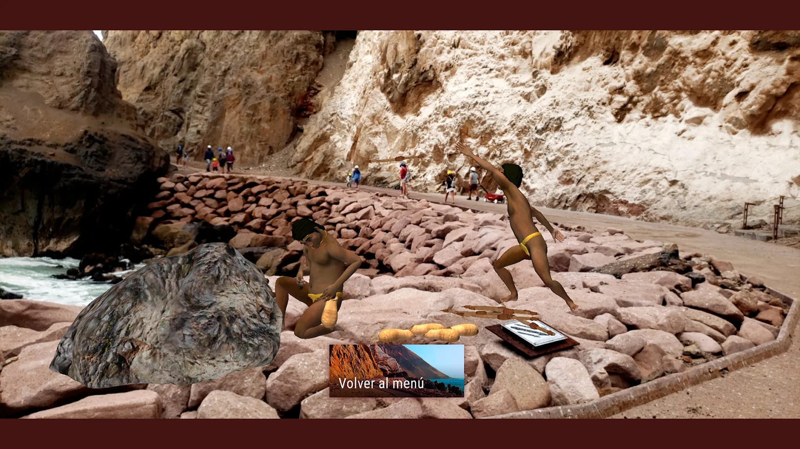

{kind=link}


La costa norte del desierto de Atacama fue el hogar de los Chinchorro, una sociedad de cazadores-recolectores marinos que vivió aproximadamente entre 7400 y 2840 AP. Se adaptaron con éxito desde el principio a estas condiciones geográficas extremas. En este ambiente de contrastes era donde pescaban, cazaban, y recolectaban mariscos y fibras vegetales; también donde se establecieron, prepararon su comida y preservaron sus muertos.
El Comité del Patrimonio Mundial inscribió el martes 27 de julio 13 sitios culturales en la Lista del
Patrimonio Mundial de la UNESCO, entre ellos, tres asentamientos y la técnica de momificación desarrollada
por la cultura chinchorro en el norte de Chile, el séptimo sitio que integra la lista de la UNESCO por parte
del país sudamericano.
El sitio recién inscrito para Chile consta de tres componentes: Faldeo norte del Morro de Arica, Colón 10,
ambos en la ciudad de Arica, y Desembocadura de Camarones, en un entorno rural a unos 100 km más al sur. En
conjunto, brindan testimonio de una cultura de cazadores-recolectores marinos que residieron en la árida y
hostil costa norte del desierto de Atacama, en el extremo norte de Chile, desde aproximadamente 5450 a.C.
hasta 890 a.C.
El sitio presenta la evidencia arqueológica más antigua conocida de la momificación artificial de cuerpos,
con cementerios que contienen tanto cuerpos momificados artificialmente como algunos que se conservaron
debido a las condiciones ambientales.
Especie de cuerpo reconstruido. Utilizando cuchillos de piedra, el cuerpo era totalmente desarticulado, descarnado y los órganos removidos. Luego, con gran maestría, el esqueleto era re-articulado mediante el uso de palos a lo largo de las extremidades y tronco a manera de refuerzo o soporte y unido con amarras de fibra vegetal.
Se hacían incisiones en ciertas partes del cuerpo como hombro, abdomen e ingle, para luego proceder a remover los órganos internos. Una vez vaciadas las grandes cavidades corporales, introducían maderos longitudinales a manera de refuerzo, y procedían a rellenar los espacios corporales con diversos sedimentos, incluyendo tierra, motas de piel de camélido, siendo posteriormente saturadas.
Variaciones de las momias rojas, en donde la piel era cortada y dispuesta en forma de vendajes alrededor del cuerpo. En este caso esta técnica solo fue utilizada en algunos niños. Una variación de esta técnica, aunque más siempre, sería el recubrimiento o embarrilado del difunto con cuerdas alrededor de todo el cuerpo.
Estas eran elaboradas con una mezcla de barro y sustancias aglutinantes, las que permitían que el barro se adhiriera a los contornos del cuerpo. Para lograr este estilo en particular, primero el cuerpo era secado. Seguramente al sol o junto a las brasas de un fogón, para luego, en algunos casos, ser descarnado.
Una aplicación para dispositivos móviles, que permite experimentar la sensación de estar junto a las momias Chinchorro al interior de la sala restringida que las resguarda. Mediante información adicional interactiva, conocerás el proceso de momificación artificial más antiguo del mundo.
Sariri es un proyecto de la Corporación Municipal Costa Chinchorro, que promueve el patrimonio de la humanidad de esta cultura ancestral, a través de la implementación de realidad aumentada Insitu, en el paseo turístico de las cuevas de Anzota. Mira algunas actividades cotidianas de pesca y momificación. Descarga el Target o Identificador en el botón, imprímelo y utilizalo con la APP.
Un explorador y articulador de oportunidades de innovación mediante el diseño.